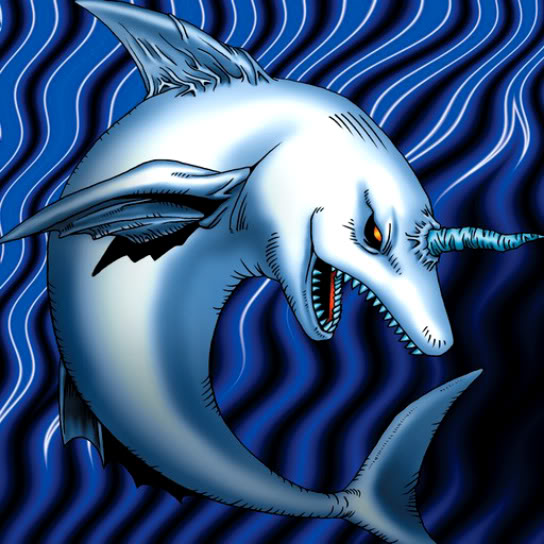

White Dolphin

STATS
ATK: 500
DEF: 400DECK COST
Deck Cost per Card: 9Fusion List (35 Possible Fusions)
- White Dolphin + Armed Ninja = Wow Warrior
- White Dolphin + Bat = Misairuzame
- White Dolphin + Bone Mouse = Corroding Shark
- White Dolphin + Cyber-Stein = Misairuzame
- White Dolphin + Cyber Commander = Misairuzame
- White Dolphin + Cyber Soldier = Metal Fish
- White Dolphin + Dancing Elf = Ice Water
- White Dolphin + Dharma Cannon = Misairuzame
- White Dolphin + Dig Beak = Tatsunootoshigo
- White Dolphin + Doron = Wow Warrior
- White Dolphin + Enchanting Mermaid = Amazon of the Seas
- White Dolphin + Fire Reaper = Corroding Shark
- White Dolphin + Greenkappa = Wow Warrior
- White Dolphin + Guardian of the Labyrinth = Wow Warrior
- White Dolphin + Hoshiningen = 7 Colored Fish
- White Dolphin + Jinzo #7 = Misairuzame
- White Dolphin + Kagemusha of the Blue Flame = Wow Warrior
- White Dolphin + Key Mace = Ice Water
- White Dolphin + Little Chimera = Tatsunootoshigo
- White Dolphin + Master & Expert = Tatsunootoshigo
- White Dolphin + Mech Mole Zombie = Corroding Shark
- White Dolphin + Mechanical Spider = Misairuzame
- White Dolphin + Milus Radiant = Tatsunootoshigo
- White Dolphin + Moon Envoy = Wow Warrior
- White Dolphin + Mystical Sheep #1 = Tatsunootoshigo
- White Dolphin + Mystical Sheep #2 = Tatsunootoshigo
- White Dolphin + Queen's Double = Wow Warrior
- White Dolphin + Rainbow Flower = 7 Colored Fish
- White Dolphin + Shadow Specter = Corroding Shark
- White Dolphin + Silver Fang = Tatsunootoshigo
- White Dolphin + Skull Servant = Corroding Shark
- White Dolphin + Swordsman from a Foreign Land = Wow Warrior
- White Dolphin + The Wandering Doomed = Corroding Shark
- White Dolphin + Unknown Warrior of Fiend = Wow Warrior
- White Dolphin + Water Element = Ice Water